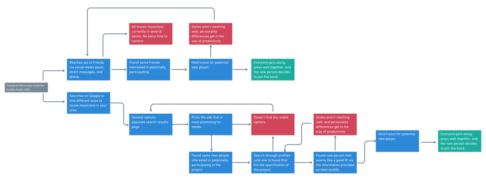
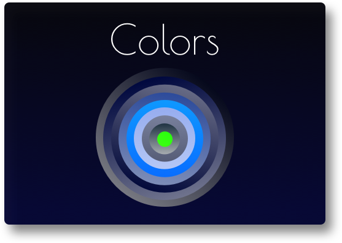
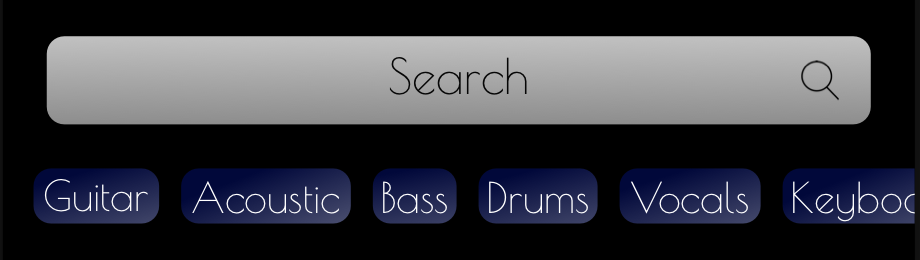

GoMuse
A UX Case Study
Find new musicians to play with in your area easily!
Musicians need social media to market their brand, but why are there no social media platform for musicians?
How might we set up musicians for success before they even reach the practice room?
Insights
"Finding people that are aware of musicality, dynamic, and texture in their playing is difficult because there's no way to vet those things before trying the potential member out. This creates a lot of room for wasted time."
- Joshua Powell
"There's an intrinsic barrier to most, if not all, exisiting social media platforms in the sense that direct media interaction is impossible, or really clunky. Finding music on apps like Facebook is exceedingly difficult due to the amount of page layers you have to go through before you get there."
- Jonny Carroll
"I've never felt comfortable reaching out on existing social media platforms in terms of finding people for music projects. There's no way to get a good feel all in one place for the potential person's style, and temperament."
- Luke Van Tress
"I wish there was a safe space where I could receive constructive criticism with no judgement. If there was an artist-centric social media, people would get in the feedback headspace naturally because they'll crave it for themselves to keep improving."
- Jacquie Jean
Personas

It doesn't matter how experienced, or old you are. Finding bandmates can be challenging.

Duke is a professional, and Adam is a beginner. Both are facing difficulties finding people to play with.
Journey Map and Storyboard
This is often what it takes to find one band member.
It's never fun, and it could be so much easier.

Inspiration
Anyone interested in playing music wants the chance to play a big stage. We can help you assemble your crew to get there.
Fonts
Poiret One
Font Weights: Only one weight for this font.
Roboto
Font Weights:
Light Light Italic Regular Medium Bold
Colors

Key Feature
Search Immediately, And Speficially Infinite instrument Scroll And Quick Search 
User Flow
Navigate quickly and figure out the best fit for your project!
Link to Google Drive, Dropbox, Youtube, and access local files to add to your profile.


Conclusion
It was enjoyable to create an app that helps locate musicians because this is a situation I've personally encountered on several occasions being a musician myself. Because of the experiences I've had, I was able to create something easy to use, sleek, and quick that adheres to my knowledge of User Experience Design. When stuck on a problem, I resorted to storyboarding, discovery interviews, and user testing.

Through my studies, I created a solution to the long living problem of finding other musicians to play with. Every iteration has created a stronger product, and every iteration after will continue to strengthen the app.
Kenzie Academy Back To Top